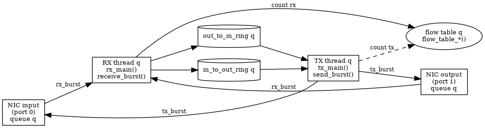

flowfwd forwards Ethernet frames between two network interfaces and keeps statistics for every TCP and UDP flow it sees. A flow is identified by its 5-tuple: source IP, destination IP, source port, destination port and protocol.
The work is split in lanes. A lane is one RSS queue of each interface and the two threads that serve it:
the RX thread (rx_main()) reads the queue of both interfaces, filters and counts the packets and puts them in a ring;
the TX thread (tx_main()) takes the packets out of the ring, sends them on the other interface and counts them as sent.
With queues = 4 there are 4 lanes, which need 1 + 2 * 4 = 9 cores: the main core and two per lane. The NIC picks the queue of a packet with an RSS hash of its 5-tuple. The hash key is symmetric (see rss_fill_key()), so both directions of a connection reach the same lane and a flow is only ever seen by one RX thread. That is why no locks are needed on the data path.

Three more threads exist besides the lanes:
the main thread runs main(): setup, a one-second statistics loop, and shutdown;
the export writer thread (writer_main() in flow_export.c) writes the CSV files so the data path never waits for the disk;
the logger thread (logger_main()) writes the log file for the same reason.
Life of a packet
A packet from input to output and back (source: doc/packet_life_sequence.mmd)
The NIC writes the frame in an mbuf of the pool made by create_mbuf_pool() and puts it in the RX queue chosen by the RSS hash.
rx_main() loops forever. Each pass it calls receive_burst() once for the input interface and once for the output interface. Each call reads up to BURST_SIZE (32) frames with rte_eth_rx_burst().
flow_table_filter_burst() parses every frame with parse_packet(). It keeps IP frames (and ARP if pass_arp is on) and frees the rest. The kept frames are moved to the front of the burst and their parsed headers are saved in a burst_meta.
If a destination MAC is configured for that direction, rewrite_dst_mac() writes it into the IP frames.
flow_table_track() counts each TCP or UDP frame in its flow, creating the flow if it is new (find_or_add_flow()). It gives back the flow slot and its generation. Frames of other protocols get the slot FLOW_NO_SLOT and are only forwarded. A frame whose flow does not fit in a full table gets FLOW_DROP.
make_items() builds one tx_item per frame (mbuf, slot, generation, length) and frees the FLOW_DROP frames. queue_items() puts the items in the in-to-out ring (input to output) or the out-to-in ring (output to input) with rte_ring_enqueue_burst_elem(). Items that do not fit are freed and counted as ring drops.
tx_main() calls send_burst() for each ring. It takes up to 32 items with rte_ring_dequeue_burst_elem(), sends them with rte_eth_tx_burst(), and for each frame that the NIC accepted calls flow_table_count_sent(). Frames the NIC did not accept are freed and counted as TX drops.
flow_table_count_sent() adds the frame to the sent counters of the slot, but only if the generation of the slot is still the one the frame was counted with. If the flow expired and the slot was given to another flow in the meantime, the frame is ignored.
Once a second it logs rx=, tx=, drops=, flows= and the load of each thread.
Any failure in steps 1 to 7 prints the reason and ends the program with a non-zero exit code.
Shutdown
Ctrl+C (SIGINT) or SIGTERM runs on_signal(), which only sets a flag. The loop in main() sees it and calls forward_stop(), which stops things in a fixed order so that no packet and no statistic is lost:
the RX threads are told to stop reading (rx_quit) and are waited for;
the TX threads keep running until both of their rings are empty (rings_empty()), then stop (tx_quit);
final_export() writes every flow with its final counters;
flow_export_stop() lets the writer thread finish its last scan and closes the CSV files;
the RX thread fills it, then the writer thread reads it, then it is free again (a ready flag with acquire and release ordering)
log queue
any thread, under a mutex
the logger thread
The sent counters of a flow are never reset. The RX thread stores their value in the flow_entry (tx_bytes_at_start, tx_packets_at_start) when the flow is created, and the export subtracts it. That way the RX thread never writes a field that the TX thread writes.
forward_drops(): NIC counters (imissed and rx_nombuf from port_drops()) plus frames dropped because the table was full, the ring was full or the NIC did not accept them.
forward_load(): per lane, the share of time the thread spent on iterations that handled packets (load_percent()). It is not CPU use: a polling thread always keeps its core busy.
rx - tx is not a loss. Frames removed by the filter (not IP, malformed, or ARP when ARP is off) are counted in rx but neither in tx nor in drops.
Prints the usage text when arguments remain after the EAL options.
config.c / config.h: the settings
Reads flowfwd.conf into a struct app_config. The settings are described by three tables (options, mac_options, string_options), so adding a setting is one line in a table.
Reads the file line by line, handles sections, comments and errors (with file and line number), and finally checks that the flow timeout is larger than the export interval.
Deletes the rtemap_* files of one mount that no process holds a lock on.
nics.c: which network devices DPDK will use
Runs before DPDK starts, reads the PCI bus from sysfs, and tells the user which device will become which DPDK port. It is skipped with virtual devices.
DPDK's RTE_LOG writes to a FILE stream. That stream is a custom one (fopencookie) that only copies each line into a queue, so a thread that logs never waits for the disk. One logger thread empties the queue.
Opens the log file, creates the stream, starts the thread, sets the log level and connects DPDK's logging to the stream. Registers logger_stop() with atexit().
Fills the RSS key by repeating a 16-bit pattern. A key that repeats every 2 bytes gives the same hash when source and destination are swapped, so both directions of a flow land on the same queue.
parse.c / parse.h: reading packet headers
A bounds-checked parser that does not depend on DPDK. It fills a pkt_info and returns a parse_result: PARSE_IP, PARSE_ARP, PARSE_OTHER or PARSE_MALFORMED.
Step 1 on the RX thread: parses a burst, keeps IP (and ARP) frames, frees the others, compacts the burst and saves the headers in a burst_meta. Prefetches the packet data PREFETCH_AHEAD frames ahead.
Adds one frame to its flow. A flow found by rte_hash_add_key() is updated; a new flow gets a new generation and a reset entry. Returns FLOW_DROP when the table is full.
Copies the next chunk of flows (5-tuple and counters) into flow_record structs; the table keeps the position between calls. Returns 0 when the pass is finished.
Load of each thread since the previous call, as text.
flow_export.c: from the tables to the CSV files
Each RX thread owns a slot with room for FLOW_EXPORT_MAX records. It fills the slot and marks it ready. One writer thread polls the slots every 50 ms, writes each ready slot with writer_write() to the two files of its lane (the RX core's and the TX core's, same rows) and marks it free. The TX thread cannot read the table itself, because only the RX thread may touch it, so the TX core's file is written from the RX thread's snapshot.
Appends one row per flow record: timestamp, addresses, ports, protocol, rx and tx bytes and packets. Flushes after each call. Fails with EINVAL for an invalid address family.
Everything of one queue in one struct: its RX and TX lcores, flow table, the two rings, the destination-MAC settings and the statistics of both threads. The array queue_args[] replaces what used to be several parallel arrays indexed by queue.
One flow's 5-tuple and counters, as passed to the CSV writer.
Files the program writes
File
Content
flow_stats_core_<core_id>.csv
One row per flow per export, appended: timestamp,src_ip,dst_ip,src_port,dst_port,protocol,rx_bytes,tx_bytes,rx_packets,tx_packets. One file per worker core; the RX core and the TX core of a queue write the same rows. Counters are cumulative since the flow was created.
log.txt
The log, appended (the name and level come from flowfwd.conf).